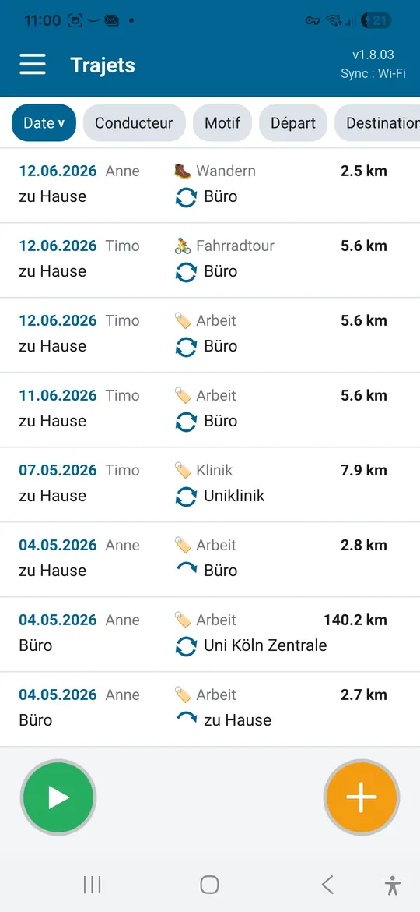
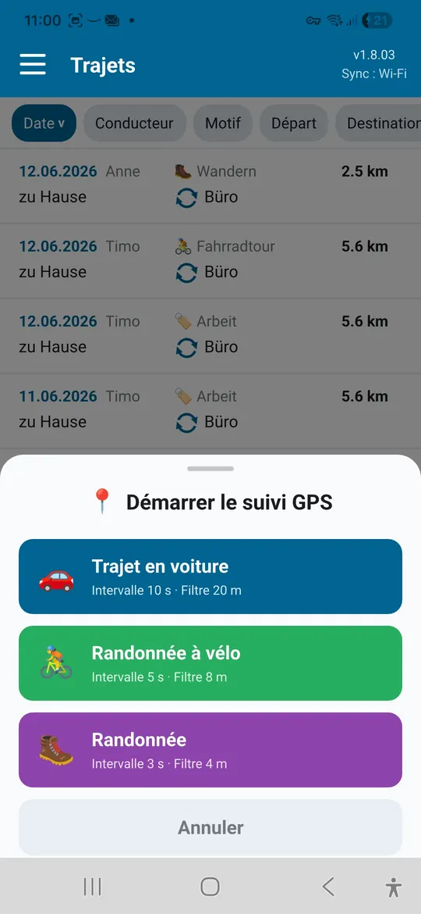
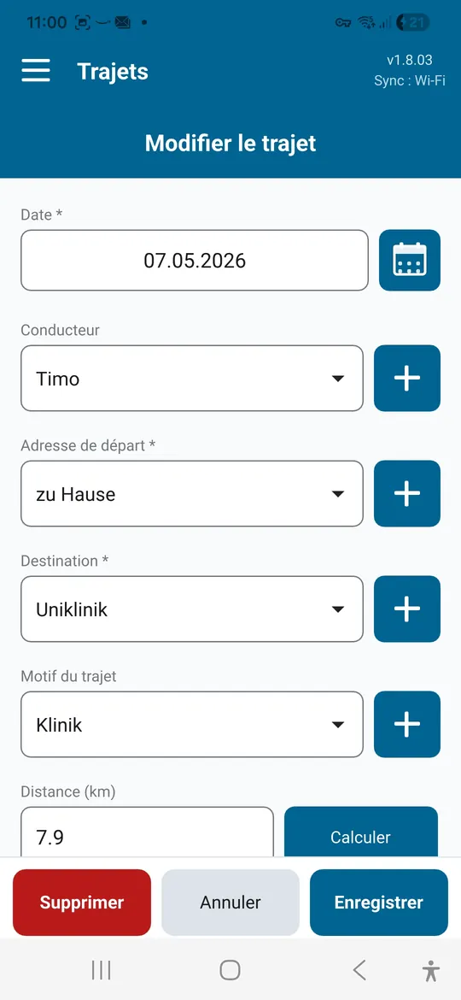
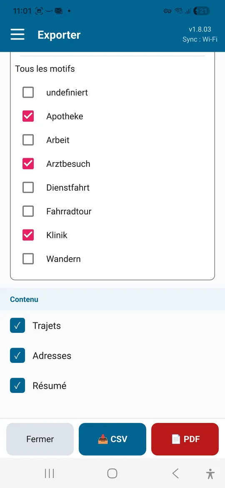

Indépendants et petites entreprises
Notez visites clients et déplacements professionnels avec motif et distance. Le récapitulatif mensuel sert de base à la facturation et aux impôts.
Carnet de bord pour Android et Windows
Driver's Log enregistre vos trajets avec date, conducteur, motif, départ et arrivée, et calcule la distance automatiquement. Pour les déplacements professionnels, les rendez-vous médicaux et les sorties de loisir, avec export PDF ou CSV.
| Date | Conducteur | Motif | Départ → Arrivée | km |
|---|---|---|---|---|
| 06/10 | Anne | Visite client | Bureau → Sté Weber | 38,4 |
| 09/10 | Tom | Médecin | Domicile → Cabinet Dr Klein | 12,6 |
| 12/10 | Anne | Vélo | Bords de rivière → Vieille ville | 24,1 |
| Total | 75,1 |

Un carnet de bord est utile partout où des trajets doivent être justifiés, remboursés ou simplement conservés.
Notez visites clients et déplacements professionnels avec motif et distance. Le récapitulatif mensuel sert de base à la facturation et aux impôts.
Rassemblez les trajets vers médecins, cliniques et séances de thérapie, comme justificatif pour les impôts ou un remboursement.
Documentez les trajets pour l'association, le bénévolat ou l'aide à un proche et faites-les rembourser en une fois.
Enregistrez la sortie par GPS, nommez départ et arrivée et conservez la distance.
Enregistrez la distance parcourue par GPS, même avec le téléphone dans la poche.
Remarque fiscale : l'administration fiscale peut imposer des exigences de forme strictes, par exemple pour un véhicule de fonction. En cas de doute, vérifiez avec votre conseiller fiscal si vos relevés suffisent.
Tout ce qu'il faut à un carnet de bord, sans paperasse.
Enregistrez départs et arrivées dans le carnet d'adresses, puis choisissez-les d'un geste. Les suggestions viennent d'OpenStreetMap.
La distance entre départ et arrivée est calculée par itinéraire, à l'aller, au retour ou les deux.
Pour la voiture, le vélo ou la randonnée. L'enregistrement continue en arrière-plan puis remplit le formulaire du trajet.
Attribuez chaque trajet à une personne, par exemple quand une famille ou une équipe partage une voiture.
Visite client, médecin, courses : créez vos motifs et triez la liste en fonction.
Par mois ou année complète et par motif, avec liste des trajets, récapitulatif par itinéraire et liste d'adresses.
Sauvegarde quotidienne dans un dossier de votre choix, conservée même si l'app est désinstallée.
Français, allemand, anglais, néerlandais et espagnol.
Synchro Wi-Fi · Pro
Votre appareil Android et votre PC Windows synchronisent les trajets directement via votre Wi-Fi. Un trajet enregistré sur un appareil apparaît peu après sur les autres.





Captures avec données d'exemple.
Driver's Log est gratuit. Un achat intégré unique débloque Pro, sans abonnement.
| Fonction | Free | Pro |
|---|---|---|
| Trajets | jusqu'à 25 | illimités |
| Enregistrement GPS | ✓ | ✓ |
| Export PDF et CSV | ✓ | ✓ |
| Plusieurs conducteurs et motifs personnalisés | ✓ | ✓ |
| Sauvegarde automatique | ✓ | ✓ |
| Synchro Wi-Fi entre appareils | – | ✓ |
| App Windows avec synchro | – | ✓ |
Google Play affiche le prix actuel dans votre devise.
L'app Windows est gratuite. La synchro avec le téléphone nécessite Pro dans l'app Android.
Télécharger pourWindowsUniquement sur vos propres appareils, dans une base de données locale. Il n'y a ni compte ni stockage cloud.
Seulement pour les suggestions d'adresses et le calcul automatique des distances. La saisie des trajets et la synchro Wi-Fi fonctionnent hors ligne.
Tous vos trajets existants sont conservés. Les nouveaux trajets s'ajoutent ensuite avec Pro.
L'export est une bonne base pour la déclaration et les remboursements. Son acceptation dépend de votre situation et des règles locales.